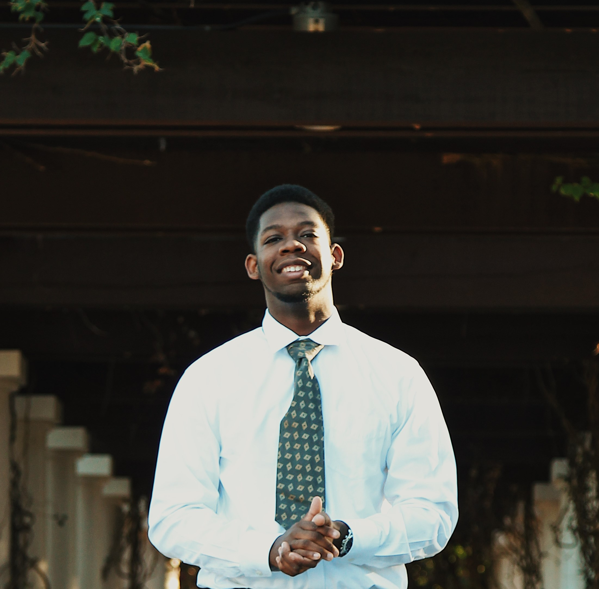

May 2022 | 3.0 GPA
I enjoy project-oriented working with challenging goals and trying to find efficient, innovative, and fun paths to achieving those goals
I am currently a Senior at USF on my way to earning my BS in information Science.
I have currently worked on 1 organized group project and have completed a self-motivated starter app.
Leading others in accomplishing task in an efficient and fast way, being able to adapt to various environments, and working under fast-paced and high pressure work environments are all skills I have learned from past job experiences.
| Skill/Technology | Amount of experience |
|---|---|
| Java | 3+ years of Experience, Internship |
| Git | 3+ years of Experience, Internship |
| MySQL | 2+ years of Experience, Internship |
| Spring Framework | 2+ years of Experience, Internship |
| Oracle | 1+ years of experience |
| Jira | 1 year of Experience, Internship |
| HTML | 1 year of Experience |
| Kotlin | 6-9 months of Experience |
| Azure | ~6 months of Experience, Internship |
| C++ | ~6 months of Experience, Internship |